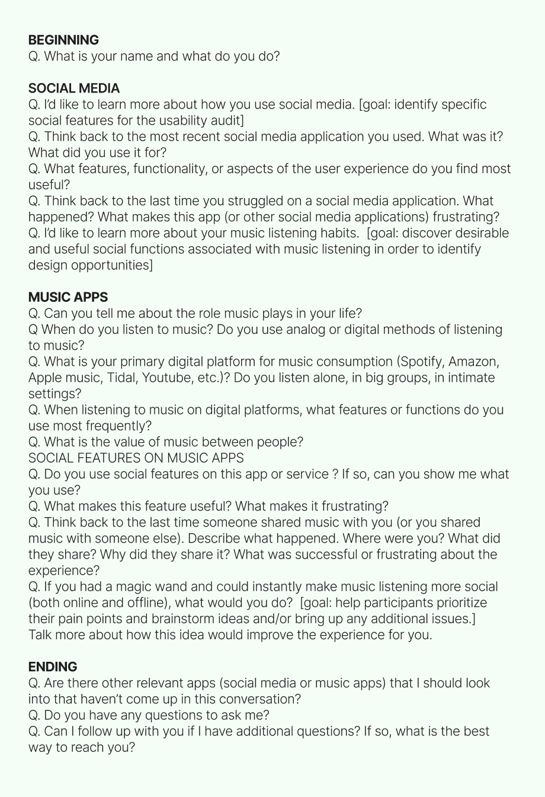

Social Spotify
Mobile Design, UX Research, Prototyping, User Testing, User Interviews
Project Overview
High-Fidelity Prototype
Role
Timeline
Tools
UX Research
Social-UX task analysis
Instagram:
Spotify:
Pinterest:
What is Social?
- Connecting with people who you can’t physically be around through music
- To suggest new music to someone based on something else that a person likes.
- The ability to find a new community based on shared music
- To be able to connect with friends/others who love the same music as you.
Discussion Guide
Interview Takeaways
- People mainly use the app to make playlists of their favorite songs
- Many like making shared playlists
- Some people use Blends for fun with their friends but doesn’t end up listening to the Blended playlists that Spotify makes because often half the songs on them are “suggested” ones and not the ones that they and the other person in the Blend actually listen to
- People only look at the friends listening feature on the desktop
- People often like to discover new artists, but usually listen to artists they already knows and like
- People sometimes check concert venues and dates on Spotify
Interpret
“How Might We...”

Persona
Refine Statements
- As a secretary at a Fintech company, Kira has a very busy schedule and wants an easy way to connect with her friends through music since she doesn’t have much free time throughout the day.
- As someone who loves music and misses her friends and family back home, Kira wants music as a way to bring nostalgia to her life.
- As someone who loves to go on walks and is constantly listening to music, Kira wants an easier way to discover new music that maybe her friends are listening to.
Idea 1
Feature on Spotify where you can change the view of playlists, so then the new view you can see the playlists in mixtape form
Idea 2
Feature on spotify that takes the music you’ve listened to and creates playlist based on time period or vibes/aesthetic. Then allows you to pick pictures, that creates a collage for the cover of the playlist in CD form.
Design
Low-Fidelity Wireframes
Mid-Fidelity Wireframes
High-Fidelity Wireframes
Presentation
See process portfolio and this video for more information about the project.